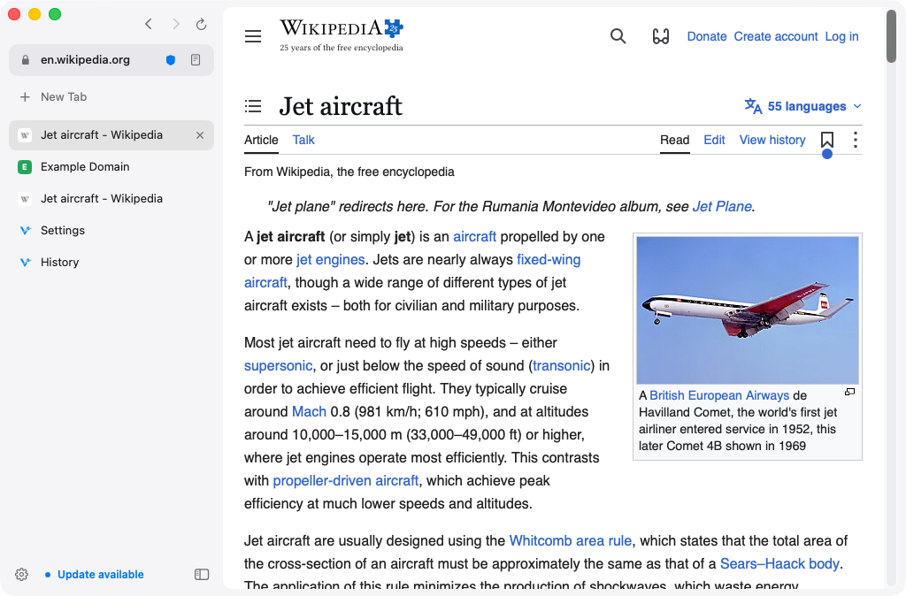
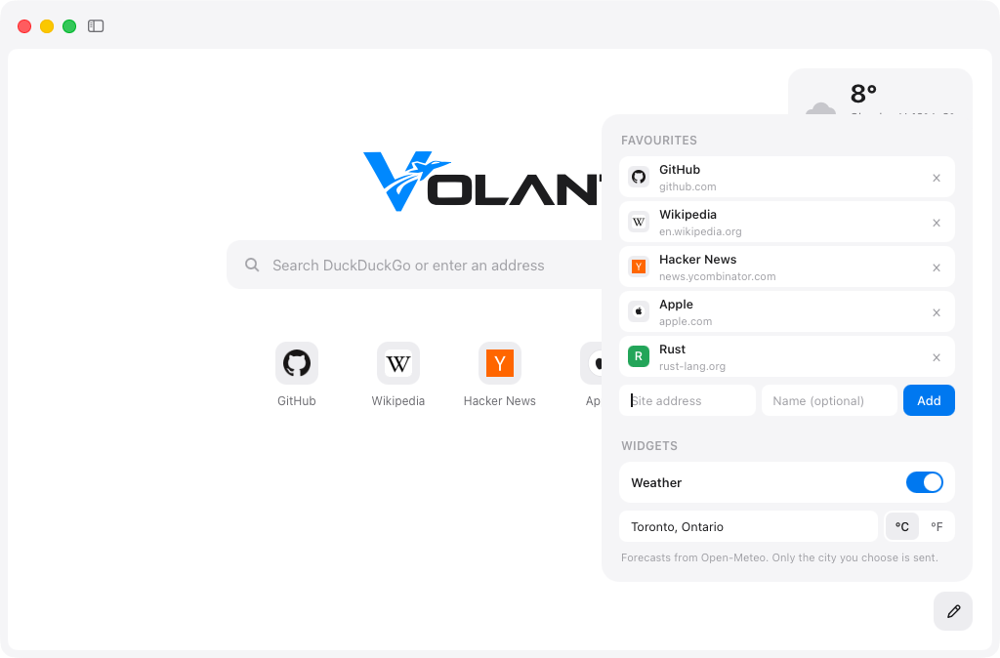
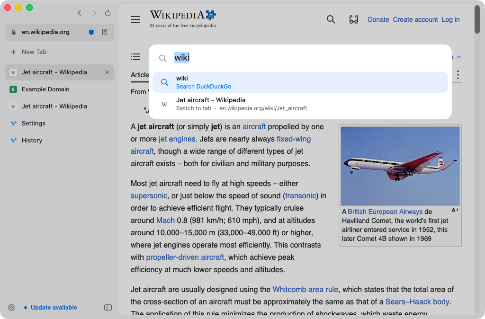
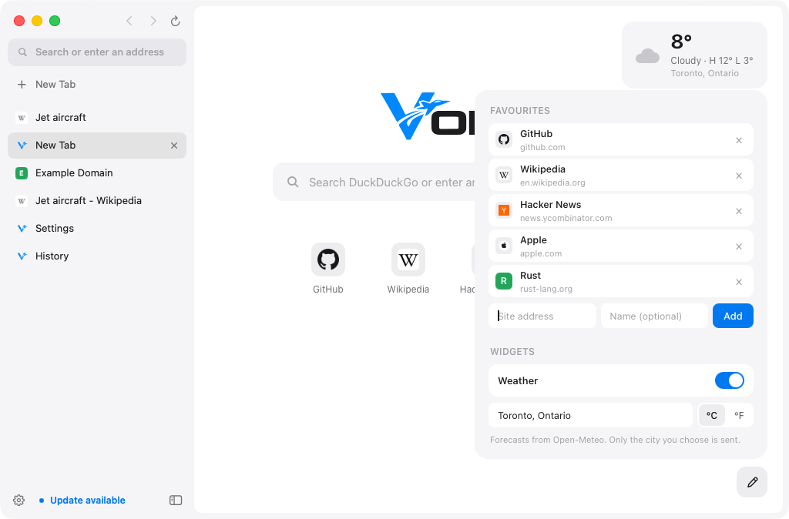
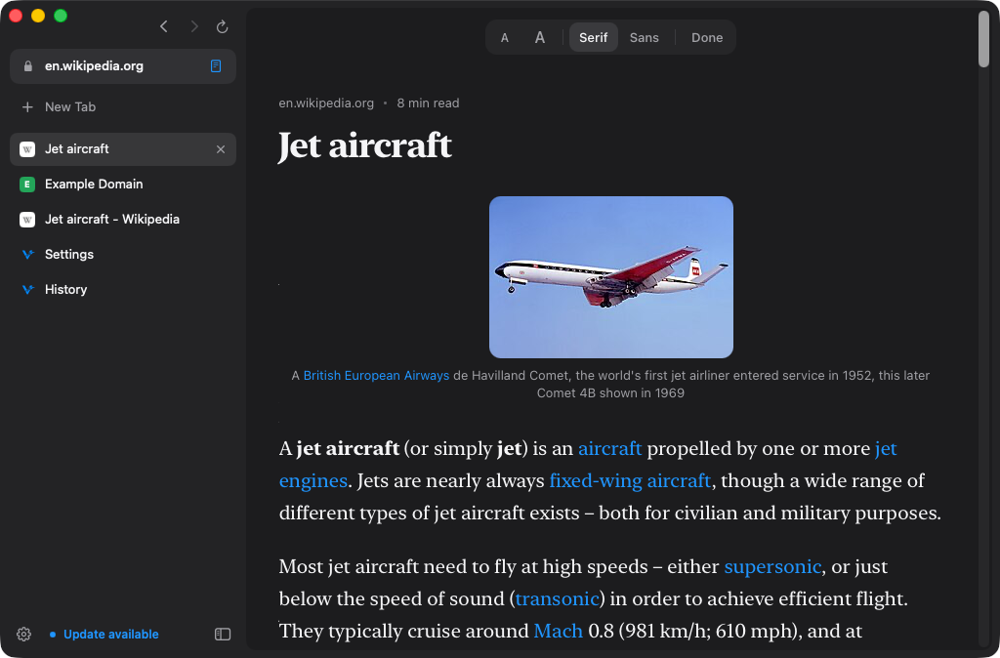
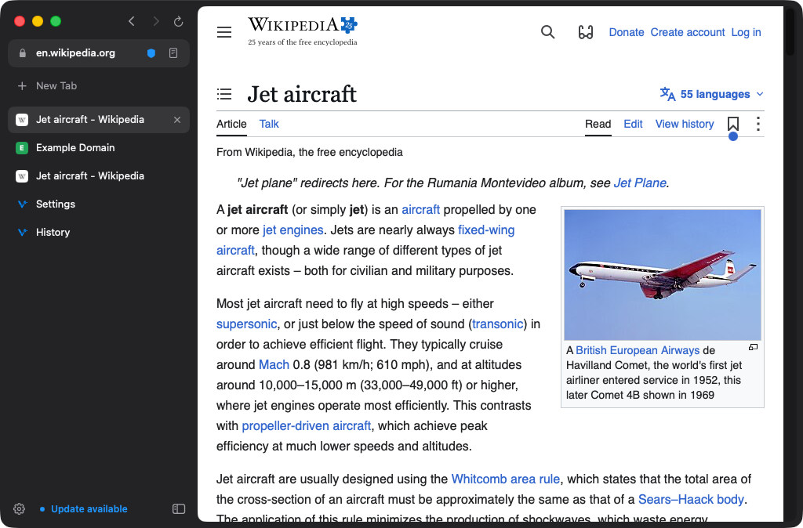

Volant keeps the browser small and quiet so the page gets the room. Here's everything it does, and where to find it.

Tabs run down the side, where long titles fit and there's room for dozens. Hide the sidebar with ⌘S and the page takes the whole window.
Pin the sites you keep open with ⌘D. They stay at the top and survive closing the window.
Tabs you haven't looked at in a while hand their memory back, then reload where you left off when you return. You choose how long, or never.
Volant reopens your tabs at launch, and ⇧⌘T brings back the last one you closed.
With the sidebar hidden, a small button by the window controls brings it back.
⌘1–⌘9 jump to a tab, ⌃Tab cycles them. All shortcuts.
⌘-click or middle-click a link to open it behind the page you're reading.

Press ⌘L or ⌘T and type. Addresses, searches, pages from your history and tabs you already have open, all in one list that updates as fast as you type.
History search is Volant's own index, sorted by how often and how recently you visit: under a millisecond per keystroke across 100,000 pages.


New tabs open on a clean search field under the Volant wordmark. Click the pencil in the corner to add favourite sites, drag them into order, and turn on the weather.
Weather comes from Open-Meteo, free and without an account. Only the city you choose is sent, and only while the widget is on.
Press ⇧⌘R on any article and Volant lays out the text alone, set in New York, in light or dark.
Reader runs on Volant's own HTML parser, written in Rust: it parses a 590 KB Wikipedia page in 4 ms and finds the article in 8.

Volant checks for a new build at launch and every few hours. One click downloads it, checks its signature, swaps it in and reopens with your tabs.
⌘F opens a small find bar that searches as you type; ⌘G and ⇧⌘G step through the matches.
Files go straight to your Downloads folder, with their progress at the bottom of the sidebar.
Follows your Mac, or pick one. Every page Volant draws itself, from Settings to Reader, matches.
DuckDuckGo, Google, Brave Search, Kagi, Bing or Ecosia, set in Settings or during setup.
No accounts, no sync, no telemetry. What Volant keeps, and where.
